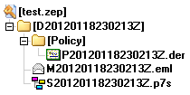
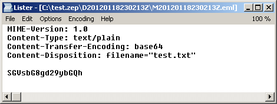

Interoperabilita ZEP - Yeti moderného sveta
Článok obsahuje prepis môjho príspevku na konferenciu “Informačná bezpečnosť 2012”, ktorú organizovalo združenie SASIB (Slovenská asociácia pre informačnú bezpečnosť) a konala sa 15.02.2012 v sále Kongresového centra Technopol v Bratislave.
1. Úvod
Zaručený elektronický podpis (ďalej len ZEP) sa vďaka rozvoju v oblasti eGovernmentu stal bežnou súčasťou nášho života. Šetrí nám čas i peniaze a tak niet divu, že by sme jeho výhody radi využívali aj za hranicami nášho štátu. Sú však ostatné členské štáty Európskej Únie pripravené uznať náš ZEP alebo je jeho interoperabilita len mýtus podobný yetimu? A čo my? Sme schopní akceptovať obdobný elektronický podpis pochádzajúci z ostatných krajín? Odpovede na tieto otázky už hľadalo viacero odborných štúdií, ktoré však v tomto príspevku budú tak trochu zámerne obídené a namiesto toho budú predstavené úskalia slovenskej implementácie ZEP z pohľadu člena tímu vyvíjajúceho aplikácie určené na jeho vytváranie a overovanie.
2. Zaručený elektronický podpis
Smernica Európskeho parlamentu a Rady 1999/93/ES z 13. decembra 1999 o rámci spoločenstva pre elektronické podpisy (1) priamo definuje dva typy elektronických podpisov:
- Elektronický podpis
(angl. electronic signature) - Zdokonalený elektronický podpis
(angl. advanced electronic signature)
Smernica ukladá členským štátom povinnosť zabezpečiť, aby zdokonalené elektronické podpisy, ktoré sú založené na kvalifikovanom certifikáte a ktoré sú vytvorené bezpečným zariadením na vytvorenie podpisu spĺňali zákonné požiadavky na podpis vo vzťahu k dátam v elektronickej forme rovnakým spôsobom, ako vlastnoručný podpis spĺňa takéto požiadavky vo vzťahu k dátam na papieri, a tak nepriamo zavádza tretí typ podpisu:
- Zdokonalený elektronický podpis založený na kvalifikovanom certifikáte vytvorený bezpečným zariadením na vytvorenie podpisu
(angl. qualified electronic signature)
Požiadavky smernice do slovenskej legislatívy prenáša zákon č. 215/2002 Z. z. o elektronickom podpise (2) (ďalej len zákon), ktorý definuje pojem zaručený elektronický podpis a zjednodušene môžeme povedať, že sa jedná o slovenskú obdobu tretieho typu podpisu definovaného smernicou.
ZEP je teda zdokonalený elektronický podpis založený na kvalifikovanom certifikáte vytvorený bezpečným zariadením na vytvorenie podpisu s právnou silou vlastnoručného podpisu.
3. ETSI a zdokonalené formáty elektronických podpisov
Použitie ZEP na Slovensku upravuje zákon a vyhlášky Národného Bezpečnostného Úradu (ďalej len NBÚ alebo úrad), ktoré pripúšťajú pri vytváraní ZEP využitie jedného z troch medzinárodne uznávaných formátov zdokonalených elektronických podpisov definovaných inštitútom ETSI:
- CAdES - CMS Advanced Electronic Signature (ETSI TS 101 733)
Rozšírenie CMS formátu definovaného v RFC 3852 - XAdES - XML Advanced Electronic Signature (ETSI TS 101 903)
Rozšírenie XML-DSig formátu definovaného konzorciom W3C - PAdES - PDF Advanced Electronic Signature (ETSI TS 102 778)
Interný podpis PDF dokumentov založený na CAdES
Uvedené normy je možné získať bezplatne z webových stránok inštitútu ETSI a formáty elektronických podpisov nimi definované predstavujú aj relatívne dobrú záruku interoperability, keďže ich napríklad preferuje aj rozhodnutie Európskej komisie 2011/130/EÚ z 25. februára 2011, ktorým sa ustanovujú minimálne požiadavky na cezhraničné spracovanie dokumentov elektronicky podpísaných príslušnými orgánmi v zmysle smernice Európskeho parlamentu a Rady 2006/123/ES o službách na vnútornom trhu (3).
Štandard popisujúci formát CAdES môžeme vo všeobecnosti označiť za veľmi kvalitný, pretože komplexne pokrýva problematiku vytvárania a overovania elektronického podpisu nielen z krátkodobého, ale aj z dlhodobého hľadiska. Počas implementácie tohto štandardu sme však identifikovali relatívne závažné nedostatky v podobe absencie referenčnej implementácie, ktorá by na viacerých miestach pomohla spresniť text, a v podobe absencie množiny testov, ktorú by bolo možné použiť na overenie zhody s normou.
3.1 Absencia referenčnej implementácie
Viacero odborníkov zastáva názor, že IT štandardy by sa pri popise algoritmov nemali obmedzovať len na slovný popis, ale mali by obsahovať aj grafické znázornenie algoritmu vo forme vývojového diagramu alebo v ideálnom prípade aj jeho referenčnú implementáciu. Môže sa totiž ľahko stať, že slovný popis algoritmu bude interpretovateľný viacerými spôsobmi a dve implementácie toho istého algoritmu budú prinášať rôzne výsledky. Situácia bude o to horšia, že obe implementácie budú v súlade so štandardom, a teda nebude možné jednoznačne prehlásiť, že niektorá z nich je nesprávna.
Podobná situácia nastala pri formáte CAdES, kde nebol jednoznačne popísaný algoritmus radenia jednotlivých častí CMS štruktúry pri počítaní odtlačku (angl. hash). V rámci zachovania interoperability musia dnes aplikácie overujúce platnosť elektronického podpisu radiť časti CMS štruktúry viacerými spôsobmi.
Tomuto ale aj ďalším podobným problémom by sa určite dalo predísť, ak by autori do štandardu popisujúceho CAdES začlenili aj referenčnú implementáciu vybraných častí, alebo ak by štandard vhodne doplnili ukážkami jednotlivých podpisov. Takýto prístup nie je v oblasti kryptografickým štandardov ničím neobvyklým a skvelou ukážkou je napríklad RFC 3174 popisujúce algoritmus SHA1, v ktorom je referenčnej implementácii algoritmu v jazyku C venovaná samostatná kapitola.
3.2. Absencia referenčných testov
Ak vyvíjate aplikáciu implementujúcu tak významný štandard akým je CAdES, určite budete hľadať spôsob na overenie správnosti vašej implementácie. Pravdepodobne začnete pátrať po validátore formátu alebo po referenčných testoch (niečo ako je HTML validátor od konzorcia W3C alebo ACID testy pre webové prehliadače), no postupne pochopíte, že nič také voľne dostupné neexistuje.
Pravdepodobne teda skončíte s vlastnou množinou testov na potvrdenie zhody so štandardom a na test interoperability si vytipujete aspoň dve už existujúce implementácie. Na stránkach ETSI je však s obľubou uvádzaný výrok, že ak sú dve implementácie interoperabilné, neznamená to nevyhnutne, že sú aj implementované v súlade so štandardom. Pri ETSI štandardoch pre zdokonalené formáty elektronických podpisov tento výrok bohužiaľ platí aj opačne.
Ak by ste interoperabilitu vašej implementácie chceli testovať dôkladnejšie, môžete sa zúčastniť na podujatí s názvom Plugtests™ (4) (trademark nie je náhoda), ktoré raz za čas organizuje ETSI a zúčastniť sa ho môže takmer každý. Ako sa bude testovať sa však dozviete až na samotnom podujatí a až po podpise povinnej NDA (5) (non-disclosure agreement), ktorá má chrániť účastníkov pred zneužitím výsledkov testov v konkurenčnom boji a teda zakazuje účastníkom publikovať akékoľvek informácie. V praxi sa teda bežne stretávame s tým, že účastníci na svojich stránkach zverejňujú len nič nehovoriacu informáciu “absolvovali sme plug testy”. Prínos týchto testov pre koncových používateľov je teda takmer nulový a ostáva im len veriť, že implementátori problémy identifikované počas plug testov neskôr aj odstránia.
4. Technické úskalia slovenskej implementácie
Treba veriť, že opísané nedostatky ETSI štandardov pre zdokonalené elektronické podpisy budú raz odstránené, pretože z hľadiska interoperability sú CAdES, XAdES a PAdES pre náš ZEP v súčasnosti tou najlepšou voľbou. Zákon a vyhlášky úradu však zavádzajú pre ZEP aj iné špecifické úpravy a obmedzenia, ktoré môžu mať na jeho interoperabilitu negatívny dopad.
4.1. Národné formáty
V súčasnosti na Slovensku používame viacero špecifických formátov, ktorých použiteľnosť je obmedzená hranicami nášho štátu.
Príkladom takéhoto formátu je ZEPf definovaný v informatívnej prílohe štandardu “Formáty zaručených elektronických podpisov” (6).
Tento formát definuje spôsob ako uložiť podpisovaný dokument a ďalšie súvisiace dokumenty (podpisové politiky, zoznamy zrušených certifikátov atď.) do jedného ZIP archívu.
Na použití ZIP archívu nie je nič zlé, no je zarážajúce, že štandard vyžaduje zmeniť mená jednotlivých vložených súborov tak, aby obsahovali čas vloženia do archívu.
Takýto postup totiž pripraví súbor s podpisovaným dokumentom o jeho pôvodný názov.
Pravdepodobne práve kvôli tomuto vedľajšiemu efektu odporúča štandard podpísaný dokument do archívu vložiť v MIME kódovaní v podobe súboru s príponou .eml.
Štruktúru jednoduchého ZEPf archívu znázorňuje Obrázok 1. Súbor s príponou .der obsahuje podpisovú politiku, súbor s príponou .eml obsahuje podpísaný dokument v MIME kódovaní a súbor s príponou .p7s obsahuje podpis dokumentu.

Obsah súboru s príponou .eml obsahujúceho podpísaný textový dokument v MIME kódovaní znázorňuje Obrázok 2.

Formát ZEPf je v súčasnosti preferovaný všetkými na Slovensku certifikovanými aplikáciami na vytváranie ZEP vo formáte CAdES a je veľmi pravdepodobné, že priemerný používateľ si s týmto formátom bez špecializovanej aplikácie neporadí a pôvodný dokument z tohto archívu nevydoluje. Je očividné, že formát by bol oveľa použiteľnejší, ak by sa pôvodný dokument v archíve nachádzal s pôvodným názvom a bez MIME kódovania.
Napriek tomu, že špecifikácia formátu ZEPf je voľne dostupná v štandarde vydanom úradom, validačné autority v ostatných členských štátoch s ním majú často problémy. Pokročilému používateľovi nepomôže ani extrahovať súbor s pôvodným dokumentom a súbor s jeho podpisom, pretože podpísaná je v skutočnosti MIME reprezentácia dokumentu a nie dokument samotný.
Formát ZEPf je vynikajúcim príkladom národného formátu, ktorý relatívne dobre funguje v rámci Slovenska, no nemá práve pozitívny vplyv na interoperabilitu v rámci EÚ.
4.2. Formáty dokumentov použiteľné v administratívnom styku
Vyhláška NBÚ 136/2009 Z. z. z 26. marca 2009 (7) v prílohe č. 2 definuje formáty dokumentov použiteľné v administratívnom styku. Veľmi zjednodušene môžeme povedať, že vo vyhláške sa za administratívny styk považuje ľubovoľná komunikácia s účasťou verejnej moci využívajúca elektronický podpis alebo ZEP.
V uvedenej vyhláške okrem bežných formátov ako napríklad PDF, RTF či ODT nájdeme aj viaceré atypické formáty ako napríklad:
- ASCII v niektorom z kódovaní znakov podľa ISO
- Secure Hyper Text Transfer Protocol
- S/MIME Verzia 3
- Security Services for S/MIME
Formát “ASCII v niektorom z kódovaní znakov podľa ISO” zaujme hneď na prvý pohľad a skúsený používateľ sa neubráni otázke, či už samotné ASCII nie je kódovanie. Nemenej zaujímavý je aj formát dokumentu “Secure Hyper Text Transfer Protocol” s odkazom na RFC 2660, ktoré definuje experimentálny komunikačný protokol.
Vo vyhláške NBÚ 136/2009 Z. z. (7) sa ďalej v §3 ods. 1 uvádza, že ak
“formát elektronického dokumentu pripúšťa použitie aktívnych prvkov, elektronický dokument obsahujúci tieto aktívne prvky nemožno podpísať elektronickým podpisom ani zaručeným elektronickým podpisom”
a v §3 ods. 5 je uvedené, že
“spresnenia obsahu formátov elektronických dokumentov v administratívnom styku a ich formálne špecifikácie zverejňuje úrad na svojej webovej stránke”.
Implementátor aplikácie pre ZEP teda v snahe zistiť podrobnosti o aktívnych prvkoch v jednotlivých formátoch pravdepodobne zamieri na webovú stránku úradu, kde objaví štandard s názvom “Upresnenia obsahu a formálne špecifikácie formátov dokumentov pre ZEP” (8). Príloha A tohto dokumentu však napríklad pre formát PDF definuje len nasledovné všeobecné obmedzenia:
“Dokument v PDF musí obsahovať iba statické objekty a všetky potrebné súčasti dokumentu musia byť priamo v PDF dokumente, teda nesmie obsahovať odkazy na externé zdroje, ktoré by mohli zmeniť vizualizáciu. PDF nesmie obsahovať iné typy dokumentov než definuje [19] a obrázky, ktorých vizualizácia nie je jednoznačná, teda animácie a obrázky s použitou stratovou kompresiou.”
Vyhláška ani štandard však nevymenovali, čo je považované za aktívny prvok a toto rozhodnutie teda zjavne ostáva na implementátorovi aplikácie pre vytváranie a overovanie ZEP. Málo podrobná špecifikácia aktívnych prvkov však priamo ovplyvňuje kompatibilitu aplikácií v rámci Slovenska. Pozrime sa na príklad z praxe:
Implementátor A sa rozhodol že všetky typy anotácií v PDF bude považovať za aktívny prvok a teda dokument s nimi vyhodnotí ako nevhodný pre ZEP. Implementátor B venuje viac času analýze špecifikácie formátu PDF a zistí, že existuje viacero typov anotácií a nie všetky je nutné považovať za aktívny prvok. Implementátor B teda povolí vybrané typy anotácií a problém je na svete. Odstránenie tejto nekompatibility si bude vyžadovať úpravu niektorej aplikácie a následne certifikáciu novej verzie, čo je však finančne i časovo veľmi náročná záležitosť. Na mieste je však aj otázka, ktorý z implementátorov by mal svoju aplikáciu upraviť, keď obe sú v súlade s legislatívnymi požiadavkami.
Problém nedostatočnej špecifikácie aktívnych prvkov však ovplyvňuje dokonca aj najjednoduchší možný formát - textový dokument.
V súčasnosti existuje aplikácia pre vytváranie ZEP, ktorá v textovom dokumente nepripúšťa existenciu symbolu pre zalomenie strany (ASCII kód znaku 0x0C).
Ak sa teda implementátor rozhodol, že znak zalomenia strany bude považovať za aktívny prvok, môže sa nájsť aj implementátor, ktorý bude za aktívny prvok považovať znaky pre zalomenie riadku (ASCII kód znaku 0x0A a 0x0D).
Oba prípady sú absurdné, no bohužiaľ oba sú v súlade s legislatívnymi požiadavkami na formáty dokumentov použiteľné v administratívnom styku.
Obmedzenia formátov dokumentov použiteľných v administratívnom styku navyše predstavujú problém aj pre interoperabilitu v rámci EÚ. Asi len ťažko môžeme predpokladať, že aplikácie pre vytváranie podpisu používané v ostatných členských krajinách budú z dokumentov odstraňovať aktívne prvky (ne)definované našim zákonom a vyhláškou.
4.3. Dôveryhodný zoznam a TSL
Určenie dôveryhodnosti certifikátov je vo všeobecnosti jedným zo základných konfiguračných nastavení aplikácií pracujúcich s elektronickým podpisom. Pri overovaní platnosti ZEP je na Slovensku za dôveryhodný bod považovaná Koreňová certifikačná autorita KCA 3 prevádzkovaná NBÚ, ktorá vydáva certifikáty podriadením akreditovaným certifikačným autoritám a tie napokon vydávajú kvalifikované certifikáty pre koncových používateľov.
Slovenská republika však s prejavom dôvery ide ešte ďalej a vo vyhláške NBÚ 135/2009 Z. z. (9) zavádza nový pojem - zoznam úradom schválených podpisových politík. Slovenskej aplikácii pre overovanie ZEP teda nestačí poznať iba dôveryhodné certifikačné autority, musí poznať ešte aj úradom schválené podpisové politiky.
NBÚ publikuje strojovo spracovateľný dokument tzv. Dôveryhodný zoznam (ďalej len DZ), v ktorom sú referencie na dôveryhodné certifikáty a tiež úradom schválené podpisové politiky. DZ predstavuje svetovo unikátny typ zoznamu definujúceho dôveryhodné objekty, ktorý je však opäť špecifický iba pre Slovensko a jeho definíciu v medzinárodne uznávanom štandarde by sme hľadali márne.
Obmedzená schopnosť šíriť informácie o dôveryhodných poskytovateľoch služieb medzi jednotlivými členskými štátmi EÚ bola identifikovaná ako jeden z hlavných problémov interoperability elektronického podpisu aj v rámci projektu CROBIES (10) a bolo navrhnuté riešenie, aby všetky členské štáty publikovali tieto informácie v dokumente jednotného formátu. Týmto formátom sa stal Trust-service Status List (ďalej len TSL), ktorý je definovaný štandardom ETSI TS 102 231.
Rozhodnutie komisie 2010/425/EÚ z 28. júla 2010, ktorým sa mení a dopĺňa rozhodnutie 2009/767/ES, pokiaľ ide o zostavenie, vedenie a uverejňovanie zoznamov dôveryhodných informácií o poskytovateľoch certifikačných služieb, ktorí sú pod dohľadom členského štátu alebo sú v ňom akreditovaní (11) ukladá členským štátom povinnosť publikovať informácie o dôveryhodných poskytovateľoch služieb v podobe strojovo čitateľného a elektronicky podpísaného TSL. Slovensko samozrejme nie je výnimkou a tak dnes úrad publikuje okrem DZ už aj TSL.
TSL má oproti DZ viacero výhod. Vďaka sekvenčnému číslovaniu verzií a presnej definícii distribučných bodov je možné vykonávať automatickú aktualizáciu údajov z neho získaných. Dôveryhodné certifikáty a ďalšie objekty môžu byť obsiahnuté priamo v tele TSL, na rozdiel od DZ, v ktorom je možné uvádzať iba referencie. TSL však v súčasnosti neobsahuje položky, ktorými by bolo možné špecifikovať schválené podpisové politiky a teda zatiaľ nemôže plne nahradiť DZ zavedený úradom. Tvorcovia štandardu však naplno využili možnosti XML formátu a definovali spôsob ako TSL rozšíriť o nové prvky. Existuje teda spôsob ako informácie distribuované iba v DZ uvádzať aj v TSL a DZ použiteľnému iba v rámci SR tak dať definitívne zbohom.
Napriek tomu, že členské štáty majú povinnosť publikovať TSL, informácie v nich sú často nepresné. Napríklad v aktuálnom TSL Slovenskej republiky chýba záznam o akreditovanej certifikačnej autorite CA EVPÚ, ktorá 01.10.2009 ukončila svoju činnosť. ZEP vo formáte určenom na dlhodobú archiváciu vytvorený kvalifikovaným certifikátom od tejto CA by ste sa teda s aktuálnym TSL snažili overiť márne. Na úrovni ostatných členských štátov však situácia tiež nie je práve ružová. Francúzske TSL napríklad obsahuje certifikát služby “ADMINEO” poskytovateľa “CLICK AND TRUST”, ktorý je v nekorektnom BASE64 kódovaní a teda ho nie je z TSL možné dekódovať. Talianske TSL zas obsahuje prázdne kritické rozšírenie, kvôli ktorému môže striktný parser odmietnuť TSL spracovať. A podobných príkladov by sme našli určite oveľa viac.
Napriek uvedeným nedostatkom však nemožno povinnému publikovaniu TSL uprieť obrovský prínos pre zvýšenie interoperability elektronických podpisov v rámci EÚ.
4.4. Kvalifikovaný certifikát s rodným číslom
Od novelizácie zákona 215/2002 Z. z. v roku 2008 je v §5 ods. 1 prítomný nasledovný text:
“Ak sa v styku s orgánmi verejnej moci používa zaručený elektronický podpis, kvalifikovaný certifikát musí byť vydaný akreditovanou certifikačnou autoritou a musí obsahovať rodné číslo držiteľa certifikátu.”
Rodné číslo vo všeobecnosti považujeme za veľmi citlivý údaj a napriek tomu ho legislatíva vyžaduje uvádzať v kvalifikovanom certifikáte. Certifikát pritom predstavuje verejný dokument, ktorý je súčasťou každého ním vytvoreného podpisu. Ak podpíšete ľubovoľný dokument kvalifikovaným certifikátom, pripájate k nemu svoje rodné číslo. Mali by ste si teda veľmi dobre premyslieť, akou cestou podpísaný dokument doručíte prijímateľovi a malo by vás tiež zaujímať, ako bude prijímateľ dokument ďalej spracúvať. Úrad k tejto problematike zverejnil dokument s názvom “Informácia o podmienkach použitia rodného čísla v kvalifikovaných certifikátoch pre zaručený elektronický podpis v administratívnom styku” (12), v ktorom konštatuje nasledovné:
“Ak je prijímateľom elektronicky podpísaného dokumentu orgán verejnej moci, ktorý použitie kvalifikovaného certifikátu s rodným číslom v komunikácii vyžaduje ako povinné, predpokladá sa, že už do tohto času vedie databázu rodných čísel, má určený účel spracovania tohto osobného údaju a má vypracovaný bezpečnostný projekt alebo bezpečnostné smernice. Takýto informačný systém overovateľa musí spĺňať požiadavky zákona o ochrane osobných údajov.”
Toto vyjadrenie však zjavne nepočíta s tým, že elektronicky podpísaný dokument môže k orgánu verejnej moci putovať napríklad vo forme e-mailovej správy, ktorá bude v nešifrovanej podobe dostupná minimálne dvom správcom e-mailových serverov.
Táto zmena mala pravdepodobne priniesť predovšetkým uľahčenie identifikácie občana pri komunikácii so štátnou správou. Keď sa však dnes chcete zaregistrovať na ústrednom portáli verejnej správy, nestačí že váš kvalifikovaný certifikát obsahuje vaše rodné číslo a že ste sa kvôli jeho vydaniu museli osobne dostaviť na registračnú autoritu certifikačnej autority, kde overili vašu totožnosť. Pre ústredný portál verejnej správy je potrebné ešte aj osvedčenie osobných údajov, o ktorom musí byť vyhotovená notárska zápisnica. Aký je teda prínos rodného čísla v certifikáte?
Zákon uvádza, že rodné číslo v certifikáte je potrebné len pre styk s orgánmi verejnej moci. Logicky z toho vyplýva, že ak chcete používať ZEP v obchodnom styku, môžete použiť kvalifikovaný certifikát, ktorý rodné číslo neobsahuje. Legislatíva tu teda nepriamo zavádza kvalifikovaný certifikát s rodným číslom a kvalifikovaný certifikát bez neho. Je však niečo také naozaj potrebné? Je možné predpokladať, že si budú koncoví používatelia obstarávať dva certifikáty a že ich budú aj schopní rozlíšiť?
Nutná prítomnosť rodného čísla v certifikáte znamená aj významnú prekážku pre interoperabilitu elektronického podpisu v rámci EÚ, pretože je len malá pravdepodobnosť, že napríklad francúzsky občan bude mať v kvalifikovanom certifikáte vydanom francúzskou certifikačnou autoritou uvedené rodné číslo.
5. Interoperabilita v rámci EÚ
5.1. Miesta jednotného kontaktu
Miesta jednotného kontaktu (angl. points of single contact) na Slovensku tiež označované ako jednotné kontaktné miesta (ďalej len JKM) vo všetkých členských štátoch EÚ vznikli na základe ustanovení Smernice 2006/123/ES o službách na vnútornom trhu (13). JKM sústreďujú jednotlivé povinné administratívne úkony súvisiace s podnikaním na jedno miesto a zabezpečujú pre podnikateľov všetky formality, ktoré súvisia so získaním prístupu k podnikaniu alebo s jeho výkonom.
Akceptovanie zahraničných podpisov na týchto miestach významne upravujú rozhodnutia komisie 2009/767/ES a 2011/130/EÚ.
Rozhodnutie komisie 2009/767/ES zo 16.10.2009 (14) nadobudlo účinnosť 28.12.2009 a týmto dňom zároveň vznikla povinnosť na miestach jednotného kontaktu uznávať kvalifikované certifikáty vydané poskytovateľmi certifikačných služieb členských krajín EÚ. Postup overovania zahraničných certifikátov v súlade s platnou legislatívou pomocou TSL je popísaný v dokumente “Formáty zoznamu zrušených certifikátov a potvrdzovania stavu a platnosti certifikátov” (15).
Rozhodnutie komisie 2011/130/EÚ z 25. februára 2011 (3) ustanovilo minimálne požiadavky na cezhraničné spracovanie elektronicky podpísaných dokumentov a s účinnosťou od 01.08.2011 ukladá členským štátom povinnosť zaviesť na miestach jednotného kontaktu potrebné technické prostriedky, ktoré im umožnia spracúvať elektronicky podpísané dokumenty, ktoré príslušné orgány ostatných členských štátov podpísali elektronickým podpisom v jednom z formátov CAdES, XAdES a PAdES.
Miesta jednotného kontaktu v členských krajinách EÚ teda v súčasnosti predstavujú zároveň aj miesta, na ktorých by ZEP mal byť s najväčšou pravdepodobnosťou akceptovaný.
5.2. Akceptovanie slovenského ZEP v členských krajinách EÚ
Formáty zdokonalených elektronických podpisov definované inštitútom ETSI predstavujú pre náš ZEP stabilný základ a do istej miery sú aj garanciou jeho interoperability.
Určité technické prekážky pre bezproblémové overenie ZEP v týchto krajinách však môžu predstavovať najmä naše národné formáty ako napríklad už popísaný ZEPf. Manuálnym zásahom do overovacieho procesu je však tento problém prekonateľný a tak skutočnosť, či bude náš ZEP členským štátom uznaný, závisí už len na legislatívnej úprave uznávania zahraničných podpisov platnej v danom štáte.
5.3. Akceptovanie zahraničných podpisov na Slovensku
Z technickej stránky môže pri akceptovaní zahraničných podpisov na Slovensku predstavovať problém najmä zákonom vyžadovaná prítomnosť rodného čísla v kvalifikovanom certifikáte a nedostatočne definované obmedzenia formátov dokumentov.
Ak bude zahraničný podpis v jednom z formátov zdokonalených elektronických podpisov definovaných inštitútom ETSI, je veľmi pravdepodobné, že sa ho u nás podarí overiť. Tu je však potrebné podotknúť, že ani pozitívne overenie podpisu ešte nemusí znamenať jeho akceptovanie v administratívnom styku. Zatiaľ nezodpovedanou otázkou ostáva, či sa rozhodnutia komisie 2009/767/ES a 2011/130/EÚ vzťahujú aj na elektronické podateľne jednotlivých orgánov verejnej moci. Úrad zatiaľ na svojej stránke k tejto otázke nepublikoval žiadne stanovisko či odporúčanie.
Akceptovanie zahraničných podpisov však otvára i ďalšie nemenej zaujímavé otázky. Je totiž všeobecne známym faktom, že z elektronického podpisu nie je možné získať dôveryhodnú informáciu o tom, aká aplikácia a aké SSCD (Secure Signature Creation Device) boli použité na jeho vytvorenie. Slovenská legislatíva síce vyžaduje pri vytváraní ZEP použiť úradom certifikované produkty, no ak ich zahraničný subjekt nepoužije, nebudeme schopní to zistiť. Akceptovaním takéhoto podpisu môžeme dostať do nevýhody nielen slovenských poskytovateľov certifikačných služieb ale aj koncových používateľov úradom certifikovaných prostriedkov. V konečnom dôsledku by sme mohli pozorovať stav, keď slovenskí občania v snahe ušetriť používajú radšej zahraničné prostriedky na vytváranie elektronického podpisu a slovenský ZEP, tak ako ho dnes poznáme, by mohol úplne zaniknúť.
6. Záver
Zaručený elektronický podpis v prevažnej miere vychádza z medzinárodne uznávaných štandardov a vďaka tomu má veľký potenciál byť uznávaný aj v ostatných krajinách Európskej únie. Ako už bolo uvedené v predchádzajúcom texte, veľmi pozitívny vplyv na vzájomnú kompatibilitu softvérových riešení používaných v rámci Slovenska by mohla mať prípadná formálna špecifikácia testov pre aplikácie na vytváranie a overovanie ZEP a tiež podrobnejšia špecifikácia množiny nepovolených aktívnych prvkov pre schválené formáty dokumentov. Zvýšenie schopnosti interoperability na úrovni EÚ by zas mohlo priniesť postupné nahradenie národných formátov ich medzinárodne uznávanými alternatívami a opätovné prehodnotenie potreby prítomnosti rodného čísla v kvalifikovaných certifikátoch.
Literatúra
- SMERNICA EURÓPSKEHO PARLAMENTU A RADY 1999/93/ES z 13. decembra 1999 o rámci spoločenstva pre elektronické podpisy.
Odkaz na online verziu - Zákon č. 215/2002 Z. z. o elektronickom podpise a o zmene a doplnení niektorých zákonov v znení zákona č. 76/2009 Z. z.
Odkaz na online verziu - ROZHODNUTIE KOMISIE 2011/130/EÚ z 25. februára 2011, ktorým sa ustanovujú minimálne požiadavky na cezhraničné spracovanie dokumentov elektronicky podpísaných príslušnými orgánmi v zmysle smernice Európskeho parlamentu a Rady 2006/123/ES o službách na vnútornom trhu.
Odkaz na online verziu - European Telecommunications Standards Institute. Plugtests™ & Standards.
Odkaz na online verziu - cit. 20.01.2012 - European Telecommunications Standards Institute. CONFIDENTIAL DISCLOSURE AGREEMENT FOR PLUGTESTSTM EVENTS.
Odkaz na online verziu - cit. 20.01.2012 - Národný bezpečnostný úrad. Formáty zaručených elektronických podpisov.
Verzia 3.0 z 12.08.2009. Č.: 1223/2010/IBEP/OEP-001.
Odkaz na online verziu - Vyhláška Národného bezpečnostného úradu 136/2009 Z. z. z 26. marca 2009 o spôsobe a postupe používania elektronického podpisu v obchodnom styku a administratívnom styku.
Odkaz na online verziu - Národný bezpečnostný úrad. Upresnenia obsahu a formálne špecifikácie formátov dokumentov pre ZEP.
Verzia 1.0 z 24.07.2007. Č.: 3198/2007/IBEP-004.
Odkaz na online verziu - Vyhláška Národného bezpečnostného úradu 135/2009 Z. z. z 26. marca 2009 o formáte a spôsobe vyhotovenia zaručeného elektronického podpisu, spôsobe zverejňovania verejného kľúča úradu, podmienkach platnosti pre zaručený elektronický podpis, postupe pri overovaní a podmienkach overovania zaručeného elektronického podpisu, formáte časovej pečiatky a spôsobe jej vyhotovenia, požiadavkách na zdroj časových údajov a požiadavkách na vedenie dokumentácie časových pečiatok (o vyhotovení a overovaní elektronického podpisu a časovej pečiatky).
Odkaz na online verziu - Europe’s Information Society Thematic Portal. CROBIES : Study on Cross-Border Interoperability of eSignatures.
Odkaz na online verziu - cit. 20.01.2012 - ROZHODNUTIE KOMISIE 2010/425/EÚ z 28. júla 2010,ktorým sa mení a dopĺňa rozhodnutie 2009/767/ES, pokiaľ ide o zostavenie, vedenie a uverejňovanie zoznamov dôveryhodných informácií o poskytovateľoch certifikačných služieb, ktorí sú pod dohľadom členského štátu alebo sú v ňom akreditovaní.
Odkaz na online verziu - Národný bezpečnostný úrad. Informácia o podmienkach použitia rodného čísla v kvalifikovaných certifikátoch pre zaručený elektronický podpis v administratívnom styku.
Odkaz na online verziu - cit. 20.01.2012 - SMERNICA EURÓPSKEHO PARLAMENTU A RADY 2006/123/ES z 12. decembra 2006 o službách na vnútornom trhu.
Odkaz na online verziu - ROZHODNUTIE KOMISIE 2009/767/ES zo 16. októbra 2009, ktorým sa ustanovujú opatrenia na uľahčenie postupov elektronickými spôsobmi prostredníctvom “miest jednotného kontaktu” podľa smernice Európskeho parlamentu a Rady 2006/123/ES o službách na vnútornom trhu.
Odkaz na online verziu - Národný bezpečnostný úrad. Formáty zoznamu zrušených certifikátov a potvrdzovania stavu a platnosti certifikátov.
Verzia 3.0 zo 17.01.2010. Č.: 6535/2009/IBEP/OEP-001.
Odkaz na online verziu